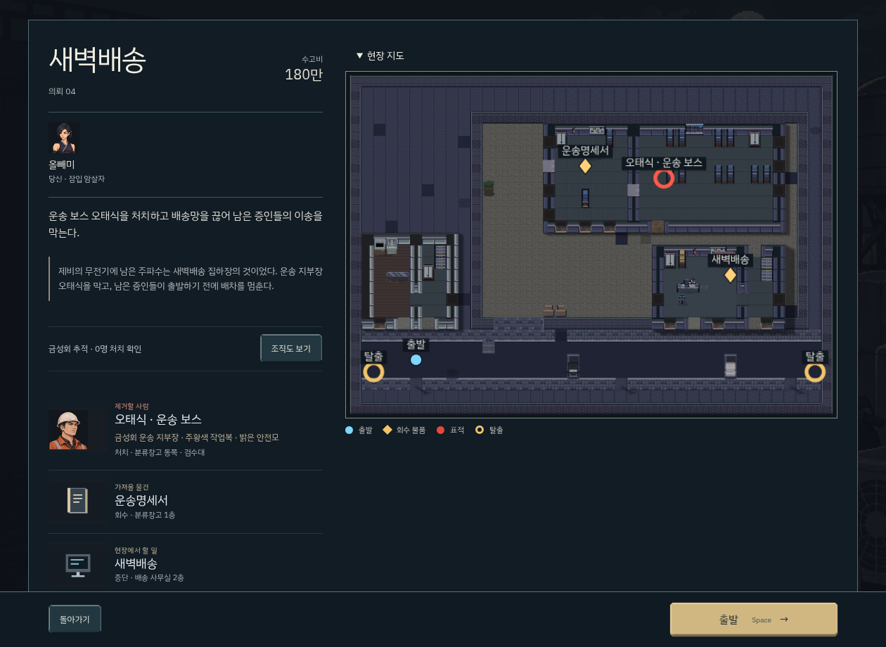
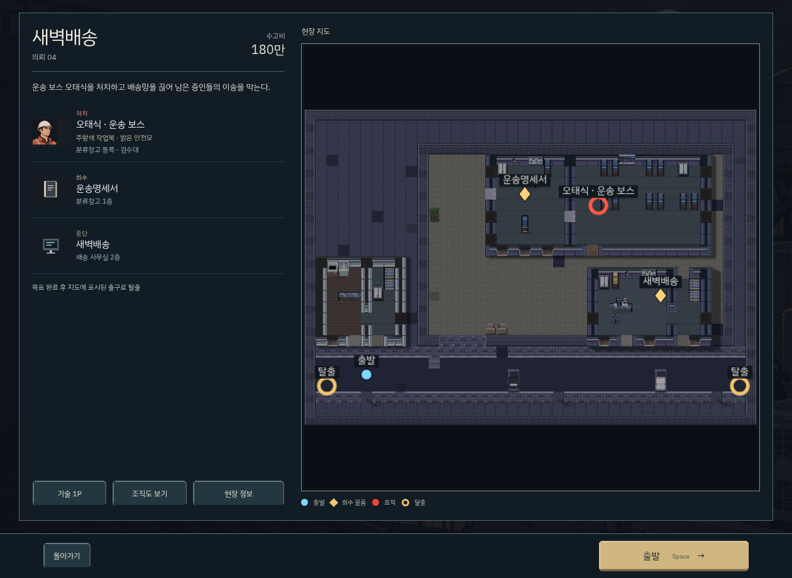
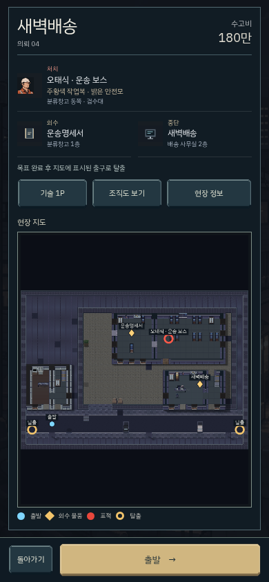
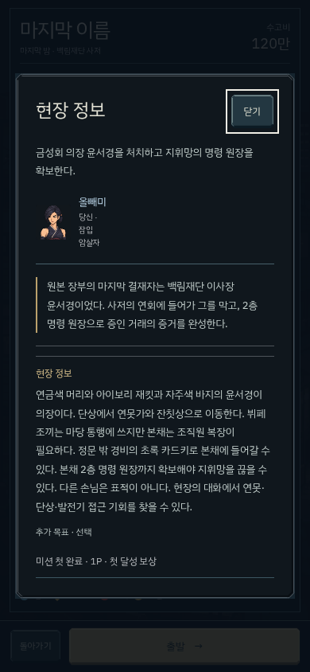
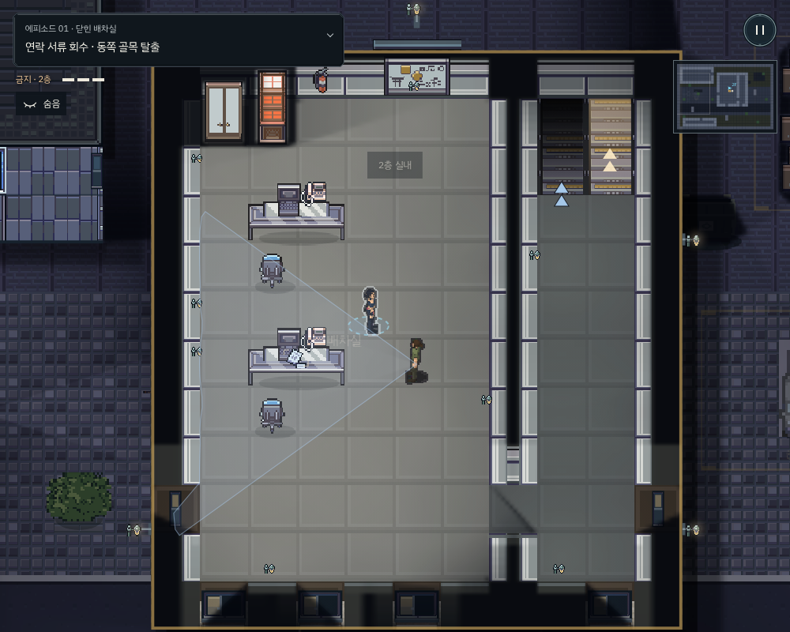

<!doctype html><html lang="ko"><meta charset="utf-8"><meta name="viewport" content="width=device-width,initial-scale=1"><title>v259 개선 확인</title><style>body{margin:24px;background:#0d171f;color:#e1dfd0;font:16px/1.7 sans-serif}main{max-width:1440px;margin:auto}section{display:grid;grid-template-columns:1fr 1fr;gap:20px}figure{margin:0}img{max-width:100%;height:auto}h1{font-weight:400}figcaption{padding:8px 0}@media(max-width:700px){section{grid-template-columns:1fr}}</style><main><h1>출발 화면과 현장 정리 · v259</h1><section><figure><figcaption>이전 · 긴 설명과 목표가 세로로 누적됨</figcaption></figure><figure><figcaption>수정 · 목표와 지도를 한 화면에</figcaption></figure></section><section><figure><figcaption>모바일 · 목표, 지도, 출발</figcaption></figure><figure><figcaption>현장 정보 · 긴 설명은 별도로</figcaption></figure></section><figure><figcaption>벽부등, 사무 가구와 계단</figcaption></figure></main>